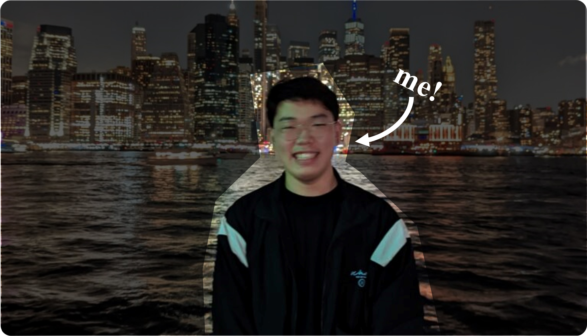

Frank Li
Scroll Down for More
Hello.
Welcome to my website!
Before I entered the college, I started thinking about having a personal website to record me. During the application season, I found out that I have, literally, nothing to talk about my life (even though it has only been 19 years), which is ... pretty upset.
Actually, it is still really really hard for me to tell who I am, what I have experienced, what is my furture dream blah blah blah. Thus, this website can provide me a chance to force me to dig a little bit more on me, Jiaqi Li (or Frank Li).
In this case, I splited this website into multiple sections: in "About Me", I would try my best to talk about who I am; in "Portfolio and Resume", I would attach my resume and some of my previous experiences (though not much); and in "Contact Me", I listed ways of contacting me (please please contact me for no matter what reason). Enjoy!
